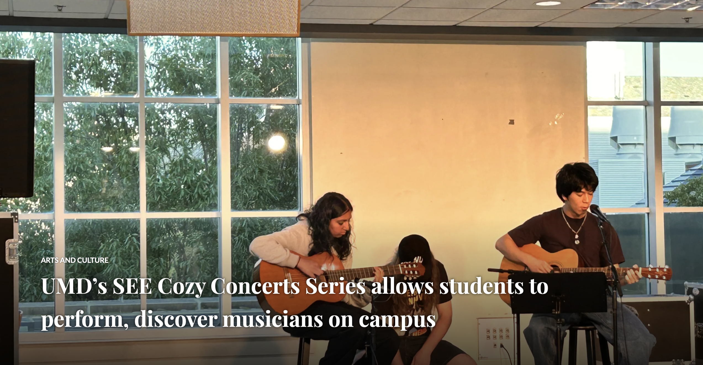
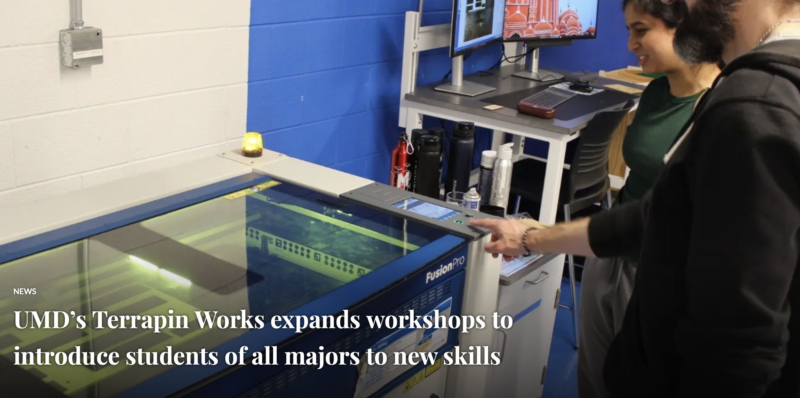
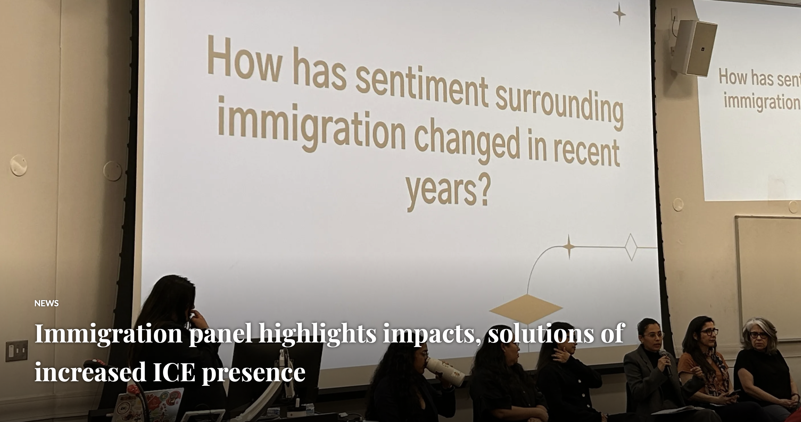
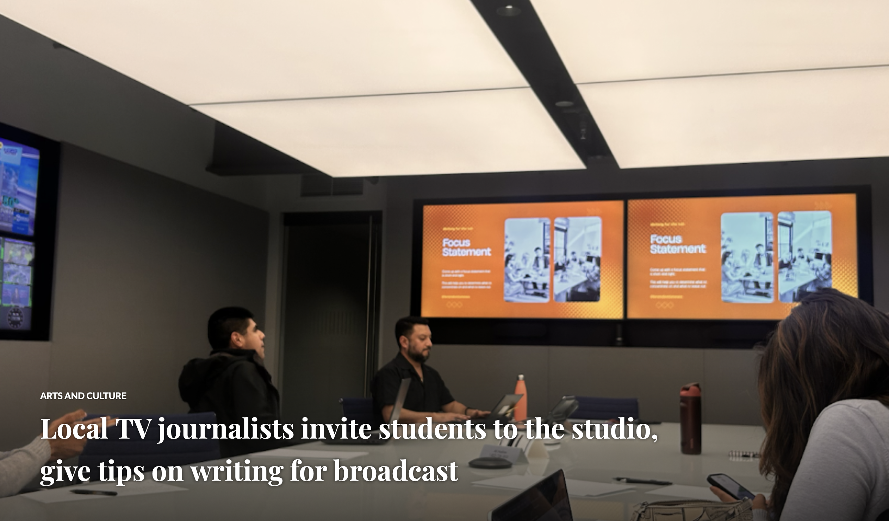

Check out my published work! On top of these stories, I also work in live productions with Big Ten Network+ where I work roles such as technical director, replay specialist, audio technician, camera operator and more.
I also work with UMD's CNS broadcast as part of the production crew to help them put on biweekly shows.
This fall, I also became a copy editor for Stories Beneath the Shell, where I contribute as a freelance reporter.




A feature story about a college student working at a small business at Montgomery College.
A PSA I produced on my previous internship.